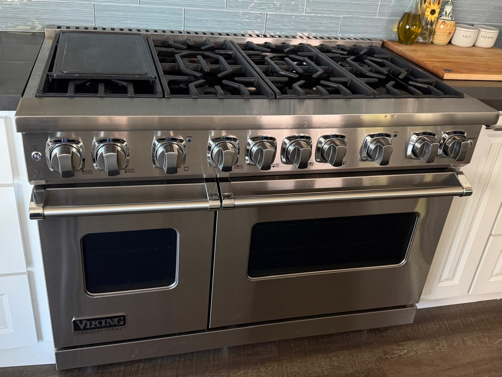
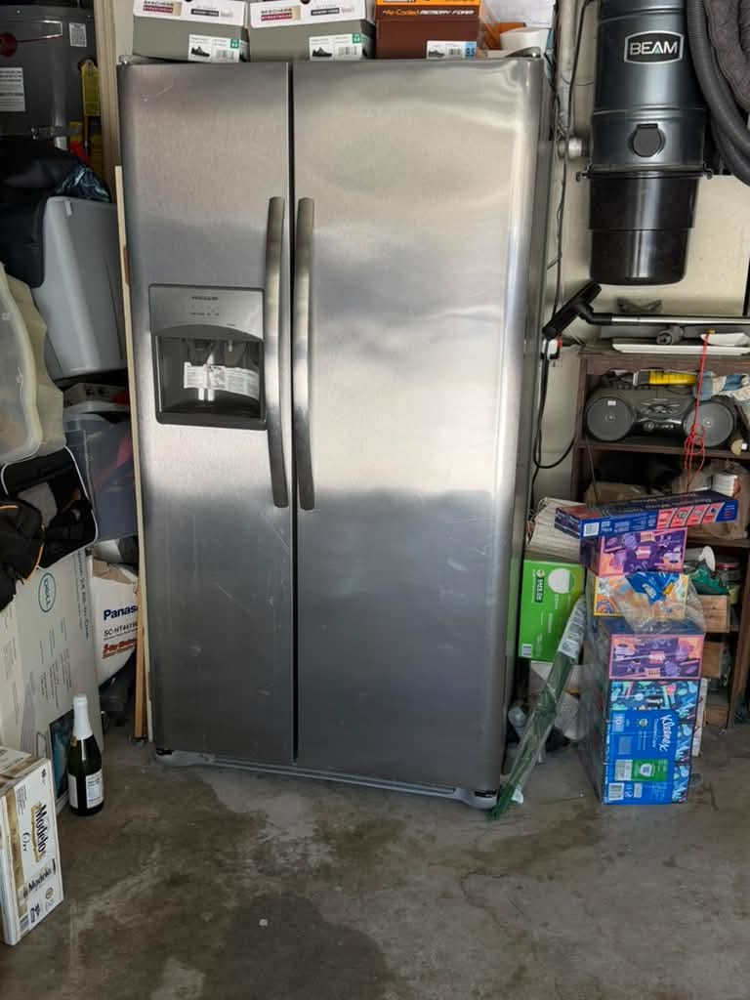
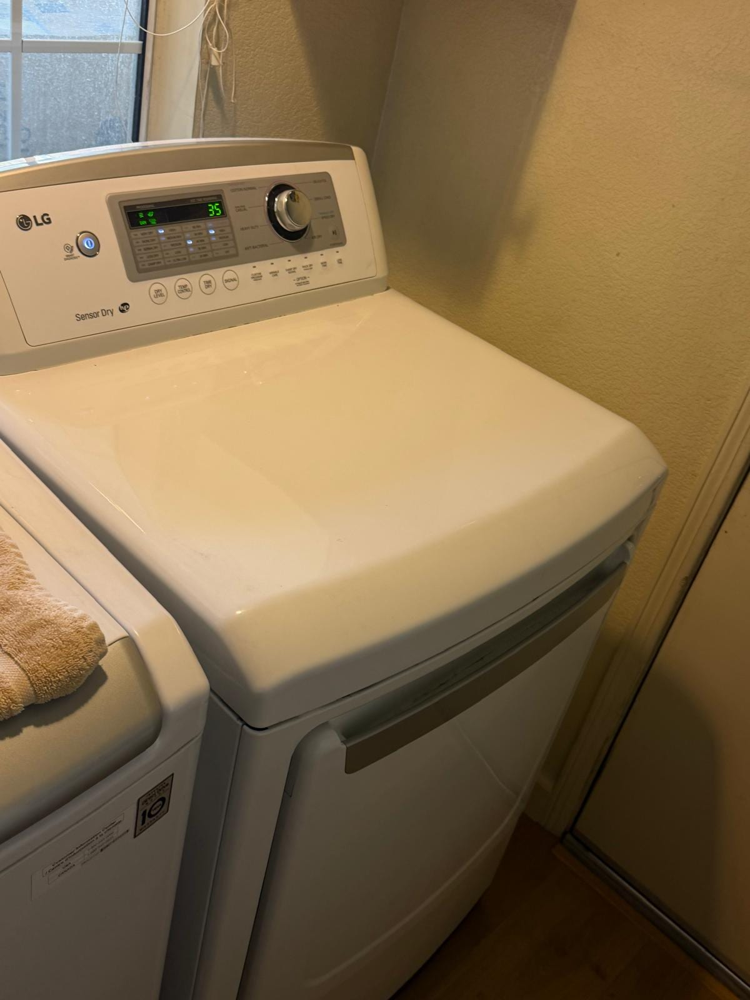

Chino Hills, CA
Viking Oven No-Heat Repair
This Viking oven was repaired after a reported no-heat issue in Chino Hills.
Serving Chino Hills and neighboring Chino, both in San Bernardino County (including ZIPs 91709 and 91710), from our home base in Stanton, Orange County. Same-day when there is room in the day. Licensed and insured.
5.0 · 160 Google reviewsMon–Sat, 8am–7pm. Two-hour arrival window. The technician calls before arriving.
See neighborhoods and ZIP codes
Family-owned since 2017 · Licensed, bonded & insured
Two completed jobs from our photo gallery. One was in Chino Hills and one was in Chino, and each card names its city.

Chino Hills, CA
This Viking oven was repaired after a reported no-heat issue in Chino Hills.

Chino, CA
This LG dryer in Chino was not heating. Repair completed; the photo shows the dryer powered on beside its matching washer.
From our 160 verified 5-star Google reviews
AG fixed our Frigidaire refrigerator. Refrigerator side not cooling
AG fixed my Samsung dryer. Good service!
Great service and very informative
Pick the appliance that is giving you trouble. Each link opens our Orange County guide for it, with its brands, symptoms and repair steps.
The service-call diagnostic in Chino Hills and Chino is a flat $99, the same fee as everywhere we work. If you go ahead with the repair, it is credited toward your repair, and you get a firm quote before any work starts. Seniors 60+ and repeat customers get 20% off labor.
Estimates vary by brand, part availability, and diagnosis. Final quote is provided before repair. Full pricing guide
A quick note on the map: Chino Hills and Chino are both in San Bernardino County, not Orange County and not Riverside County. Our home base is in Stanton, Orange County, and we serve these two cities as part of the same service area as our Orange County, Los Angeles County and Riverside County customers. One page covers both cities, because the booking, the fee and the scheduling are the same.
A San Bernardino County city that incorporated in December 1991. The county had begun planning the area’s growth in 1979. Chino Hills State Park covers over 14,000 acres of hills and trails.
A San Bernardino County city that incorporated in 1910. Chino Airport is home to two aircraft museums, Planes of Fame Air Museum and Yanks Air Museum.
Local details are from the City of Chino Hills, the City of Chino, San Bernardino County, California State Parks, and the Planes of Fame and Yanks Air Museum websites, as read in October 2026.
The three repairs on this page were a refrigerator that stopped cooling, an oven with no heat and a dryer that was not heating. Each of those symptoms can come from more than one part, which is why the first visit is a diagnostic. Here are the problems we repair.
The gallery repairs on this page include a Frigidaire refrigerator, a Viking range and an LG dryer. Everyday household makes and high-end built-ins both get the same diagnostic and the same fee. We also cover Dacor and DCS.
Independent repair service. Not affiliated with or endorsed by these manufacturers; brand names and logos are trademarks of their owners. If your appliance is still under manufacturer warranty, check with the manufacturer before booking.
Universal Appliances Repair Group Inc. provides appliance repair in Chino Hills and Chino, California, two San Bernardino County cities, including ZIP codes 91709 and 91710, for refrigerators, freezers, washers, dryers, dishwashers, ovens, stoves, garbage disposals, and wine coolers. Our home base is in Stanton, Orange County.
Same-day service is available. We also serve nearby Brea and Yorba Linda. Call (949) 629-5365 or book online.
Still have a question? Call (949) 629-5365.
Chino Hills and Chino customers get the same terms as everyone else: a firm quote before any work starts and a 90-day parts / 30-day labor warranty on every job.